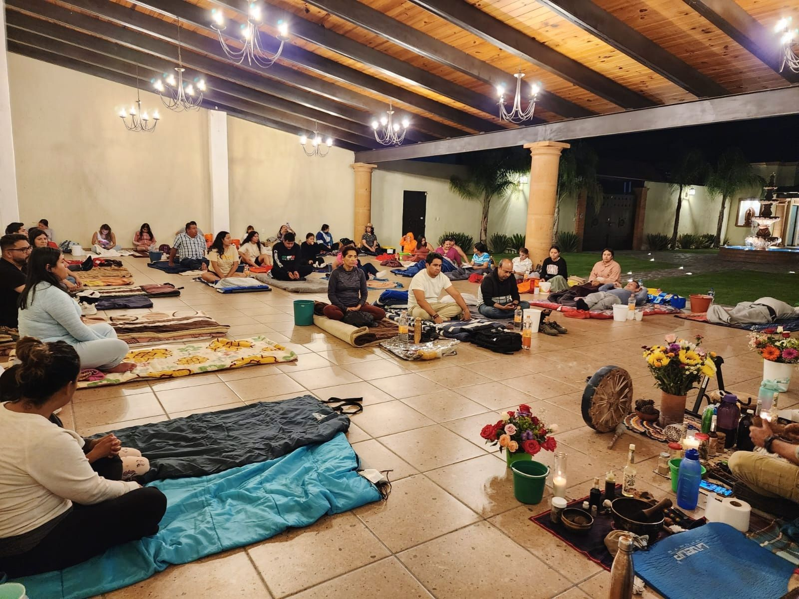

Sobre nosotros y nuestra Medicina
Yo Soy Pino, del Altar El Vuelo del Cóndor y el Águila. En el altar estamos Monse, Pino, Beto, Humberto, Itan, Yadira, Moni, Moy, Christian y Ana Melva; hombres y mujeres medicina guardianes del conocimiento Sagrado reconocidos en la Amada Presencia Yo Soy.
Más de una década trabajando con la medicina Ayahuasca y otras plantas maestras, y por supuesto con nuestro propio proceso para poder ofrecerles claridad y buena dirección en las ceremonias!
Hemos conocido directamente las tradiciones chamánicas de la Selva Peruana y compartido Altar con maravillosos maestros a lo largo de los años, lo que nos ha permitido conocer distintas técnicas y caminos.
Más de dos mil personas al año son recibidas en nuestras ceremonias y la tribu sigue creciendo.
La medicina es cocinada por la maestra vegetalista Bety, Abuela Chamana de la comunidad shipibo en la selva del Perú.
Nuestras ceremonias aplican un chamanismo contemporáneo.
En la Ceremonia ofrecemos las tomas de ayahuasca que se requieran y además en el Altar tenemos otras benditas medicinas ancestrales que también se suministran en el momento adecuado al participante adecuado; estas medicinas son: Mapacho, sananga, rapé, perfumes, mamacoca, palo santo, hojas de pino, etc.
Toda la noche hay música medicina en vivo compuesta por ícaros, mantras y música medicina occidental, con un lenguaje apropiado a nuestros propios códigos culturales occidentales.
Es importante mencionar que en cada ceremonia también nos tomamos la medicina con los participantes para realmente estar conectados y llevar la contención de la energía de la ceremonia.
Tenemos una intención muy clara en nuestras ceremonias y es el apoyarlos a reconocer su propia Divinidad, su Ser interior, al Yo Soy!
Es desde ese propio reconocimiento que estamos al servicio de todos Ustedes!
Bienvenidos 🙌🏻
Nuestra Cosmovisión
“Cuando el Cóndor del Sur y el Águila del Norte vuelen juntos en un mismo Cielo, llegará un Tiempo de Sanación y Unidad para la Humanidad.”
Ese Tiempo es ahora, y nosotros, esta Tribu, somos parte viva de esa Visión.
🌎 El Cóndor nos recuerda la Tierra, la Medicina, la Alquimia que transforma Muerte en Vida. En la cosmovisión andina representa el puente entre el mundo terrenal y el Espiritual. Su Vuelo alto y su descenso para alimentarse de lo muerto simbolizan el poder de transmutar la Sombra en Luz, y de elevar la Conciencia por encima del ego y la ilusión.
🦅 El Águila nos recuerda la Visión clara, el Propósito elevado y el Vuelo hacia lo Alto.
El Cóndor y el Águila no son opuestos ni distantes: son complemento, son Unidad, son la Profecía viva que anuncia este Tiempo nuevo.
Este Altar honra la Sabiduría de las Plantas Maestras y está al servicio de Abuelita Ayahuasca y Abuelo Mapacho. El Camino Rojo es la vía, y honramos toda práctica que conduzca a la autoobservación, el silencio interior y la reconexión con el Ser.
El Vuelo del Cóndor y el Águila no es solo un Altar físico: es un estado de Conciencia, es Magia, es el Rezo Eterno de todos como Tribu el que lo sostiene, es un llamado al Despertar. Es un punto de encuentro entre lo Ancestral y lo Presente, entre la Tierra y el Cielo, entre el Corazón humano y la Inteligencia Divina.
Somos Raíz y somos Vuelo.
Somos Corazón y Visión.
Somos Tierra y Cielo en Unidad.
Que quien se acerque a este Altar, se acerque a su propia Alma. Que quien lo honre, se recuerde a sí mismo. Que la Amada Presencia siga guiando a esta Tribu.
Ahó. Yo Soy Contigo, Yo Soy en Ti.
Le preguntaron al Chamán
¿Cómo sé si estoy list@ para tomar Ayahuasca?
Solo déjame compartir contigo que la medicina te elige, te llama, de otra forma no sabrías de ella. Ahora te corresponde a ti atender al llamado.
Ir a una ceremonia de Ayahuasca es algo muy especial: es iniciar un cambio de transformación en ti. Aya huasca es acercarte y reconectarte con tu Divinidad.
Si tú le preguntas a tu mente si quiere o si puede… siempre te dirá que no, que no hay tiempo; siempre sacará una excusa para posponer ese encuentro, porque una ceremonia de Aya huasca no se piensa, no es un evento social, no le corresponde al ego decidir. Una ceremonia es un compromiso contigo mism@.
Si le preguntas al ego, nunca va a poder; nunca se acomodan las cosas.
Cuando rebasas esa traba, entonces incluso tú vas hacia la Ayahuasca. No esperas a que llegue a tu ciudad, a que te acomode o a que puedan ir los amigos contigo. La buscas, la encuentras, te encuentras.
Compartiendo Medicinas Ancestrales desde la Amada Presencia Yo Soy.
Calendario de Ceremonias 2026
☀️ Querida Tribu, con la bendición del Gran Espíritu les damos a conocer nuestras Ceremonias en curso del Año 2026 🙌🏻
Preparación previa
Preparación previa indispensable: realizarse al pie de la letra 3 días antes de la ceremonia.
Toma nota 📝:
- Suspender el uso de medicamentos alopáticos (antidepresivos, ansiolíticos, pastillas para dormir o antigripales) mínimo 7 días antes. Contáctanos para dudas sobre tratamientos específicos.
- Eliminar consumo de cualquier tipo de carne: roja, blanca, mariscos y especialmente cerdo.
- Evitar cafeína, chocolate y café.
- No consumir alcohol (ni una cerveza), cigarrillos o cualquier sustancia intoxicante.
- Suspender otras medicinas naturales como cannabis, suplementos o tés con valeriana, hierba de San Juan, pasiflora, etc.
- No tener actividad sexual de ningún tipo. Reservar energía sexual (no eyacular).
- Eliminar el consumo de azúcar, grasas, alimentos procesados y “chatarra”.
- Suspender refrescos (gaseosas) y bebidas muy frías.
- Suspender lácteos 3 días previos (leche, queso, crema, yogur, etc.).
- El día de la ceremonia, último alimento a las 2:00 pm (después, solo agua). Puedes hacer ayuno completo (opcional).
- Procurar actividades saludables que relajen cuerpo, mente y corazón: meditación, yoga, ejercicio suave, caminata en la naturaleza, contacto con mascotas, jardinería ligera, etc.
Lo que SÍ puedes comer
- Huevo
- Tortillas
- Lentejas (en sopa o preparaciones sin tocino)
- Caldo de habas
- Verduras (sopa, al vapor, asadas, crudas o guisos)
- Frijoles (en caldo, machacados, enfrijoladas)
- Ensaladas
- Cóctel de frutas
- Champiñones en caldo o guisos
- Nopalitos asados o guisados
- Guacamole
- Soya en diferentes guisos
- Taquitos de papa, frijol o aguacate
- Arroz
- Jugos naturales
- Agua de coco natural
- Agua de frutas (sin endulzar extra)
- Agua de limón (sin endulzar)
- Algunos tés
- Leche de coco (sin lácteos)
Indicaciones para el día de la ceremonia
Ese día el último alimento es a las 2:00 pm (después, solo agua). Empezamos sábado 8:00 pm (favor de llegar puntuales) y terminamos domingo 11:00 am aproximadamente.
- Llevar ropa cómoda y calientita 🧤
- Sleeper y/o cobijas para un tendidito 🛌🏻 (evitar colchones inflables)
- Papel de baño 🧻
- Agua para beber en cilindro retornable 🍶
- Cubetita chica para purga 🪣
- Taza ☕ para compartir cacao ceremonial (al día siguiente en el círculo de palabra)
- Opcional: flores para el altar 💐
Aportación y depósito
La aportación para la Ceremonia Sagrada de Aya-huasca es de $1,800 MXN por persona (anticipo $500).
Se debe dar un anticipo de $500 MXN para confirmar tu lugar; el resto se paga el día de la ceremonia.
👉🏻 Una vez que reservas, te agregamos al grupo de WhatsApp y enviamos la dirección exacta.
Nuestros grupos son reducidos, cupo limitado: anótate con tiempo.
Datos para el anticipo (BBVA)
Tarjeta: 4152 3138 8403 3270
CLABE: 012 290 01517522398 7
A nombre de: Marlon Rocha
Para transferencia, depósito en Oxxo, PráctiCaja o banco.
Gracias, saludos y bendiciones.
Nuestra Música
Escucha la música medicina que acompaña nuestras ceremonias:
Galería

Testimonios de la Tribu
“Encontré más claridad en mi vida, más discernimiento, pero sobre todo aprendí a vivir en presencia de Yo Soy, gracias a la medicina y a los hermanitos del altar.”
Alessita“En ceremonia he tenido las experiencias más hermosas, reveladoras y sanadoras de mi vida. Estoy despertando, estoy cruzando mis miedos y estoy comenzando a recordar.”
Andrés“La guía, el apoyo y la contención que ofrecen es muy genuina y reconfortante.”
Miriam“Es un altar lleno de amor, siempre compartiendo medicinas sagradas con mucho respeto. La música que tocan en cada ceremonia es mágica.”
Jade“El ambiente es muy acogedor y muy lleno de paz y hermandad. No dudo en volver a asistir a ceremonia. ¡Ahó!”
Lizz“Una experiencia inolvidable, mágica y ancestral; llena de amor y unidad.”
ArlyContacto y reservas
WhatsApp directo a Pino
+52 1 446 397 9802